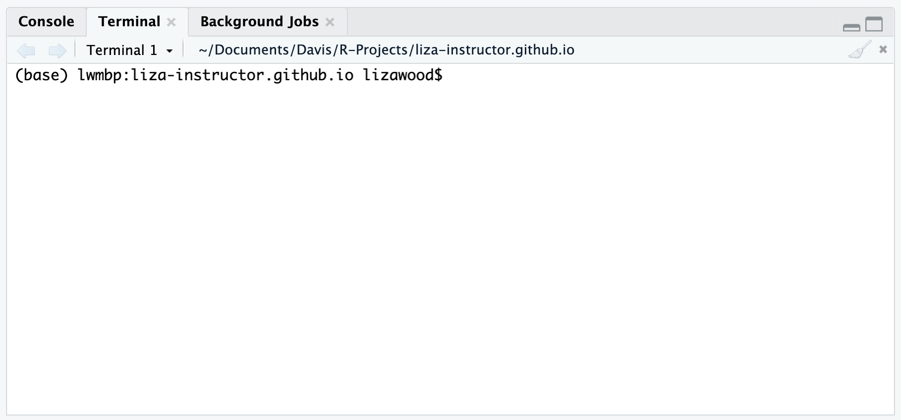

1 Set-up
Before we get started with this workshop, please make sure to (at least try to) complete the following steps so that we can be as set up as possible.
- Install R and RStudio
- Install git
- Sign up for GitHub account
- Set up SSH key between computer + GitHub
1.1 R + RStudio
R and RStudio are separate downloads and installations. R is the underlying statistical computing environment. RStudio is a graphical integrated development environment (IDE) that makes using R much easier and more interactive. You need to install R before you install RStudio. Download and install both of these but in this order:
1.2 git
Git is a ‘source code management’ software that, well, helps manage your source code. Importantly, it is a powerful version control software that can help you keep track of your workflow. It also interacts with GitHub, which is where we’ll really have fun with building webpages.
Follow this link to install git onto your computer. There will be separate instructions for Mac and Windows Operating Systems.
Note for everyone: When installing git on your computer, please do not change the installation location! The default installation location is what you want, and if during the installation you click something like “Change Install Location”, it will mess everything up
Note for Mac OS: There are several options for installing git, and I recommend following the first set of instructions. These are to 1) install Homebrew and then 2) use Homebrew to install git. You will be running these commands in your ‘Terminal’. If you have never used your Terminal before, search for it using your Mac search box. You should open up a window that looks like this:

1.3 GitHub
Register for a free individual GitHub account. I recommend doing this with your @ucdavis.edu email, since that will allow you to request the Student Developer Pack. This will give you unlimited private repositories, among other goodies. Otherwise, any email will do.
This is where we will be hosting our webpages, and your webpage name will be directly linked to your username. So please reflect on that as you choose a username, particularly if this is a webpage you plan to use for a scholarly profile.
1.4 SSH
Once you have successfully downloded git and signed up for GitHub, we have one last task: link your local computer to your GitHub account by setting up an SSH key. To check that you have downloaded git, you can open up your Terminal on Macs, or Git Bash on Windows. In that window, type the following code:
which gitThe response from your terminal prompt should look something like this (not exact is okay, mostly a response is what matters):
/usr/local/bin/gitGitHub has put together instructions on how to set up your SSH key, and you will need to do this through Terminal/Git Bash. You will want to make sure you do the following:
- Generate an SSH key. One strong recommendation is to NOT set a passphrase when prompted in Step 3. So when you are prompted for a passphrase, simply press the Enter key twice without pressing any other keys.
- Add the SSH key to ssh-agent. If you did not set a passphrase, pay special attention to the blue boxes in Steps 2 and 3.
- Add the new SSH key to your account. If you follow these steps, you should be all set!
If you get stuck here, hang tight and we will try to walk through this together at the start of the workshop